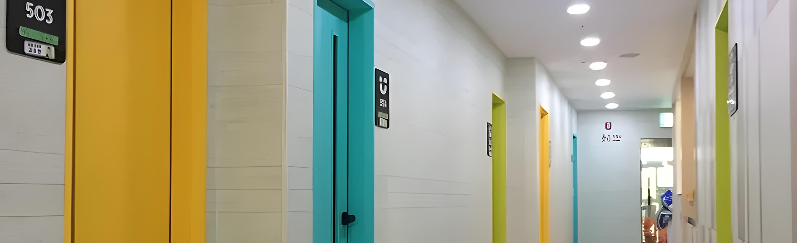

-
소중한 우리 아이,
믿을 수 있는 병원에서 진료하세요.
부산아동병원은 2011년부터 부모의 마음으로
아이들의 건강을 지켜온 소아·청소년 전문 병원입니다.
-
소중한 우리 아이,
믿을 수 있는 병원에서 진료하세요.
부산아동병원은 2011년부터 부모의 마음으로
아이들의 건강을 지켜온 소아·청소년 전문 병원입니다.
진료과목
우리 아이에게 꼭 맞는 맞춤 의료 서비스를 제공합니다.
-
영유아 건강검진
자세히보기+
-
예방접종
자세히보기+
-
소아 소화기센터
자세히보기+
-
알레르기 클리닉
자세히보기+
-
비뇨·생식기 클리닉
자세히보기+
-
감염 클리닉
자세히보기+
-
내분비 클리닉
자세히보기+
-
신장 클리닉
자세히보기+
-

영유아 건강검진
아이의 성장과 발달을 정기적으로 확인하고,
이상 징후를 조기에 발견해 적절한 대응을 돕습니다.
부산아동병원은 연령별 맞춤 검진과
전문 의료진의 상담을 통해 아이의 건강을 관리하며,
예방적 건강 관리를 지원합니다.
정기적인 검진을 통해 우리 아이의 건강한 미래를 준비하세요.
-
예방접종
예방접종은 감염병으로부터 아이들을 보호하는 효과적인 방법입니다.
적절한 시기에 백신을 접종하면 면역력을 형성하여 질병을 예방하고,
합병증의 위험을 줄일 수 있습니다.
부산아동병원은 안전한 백신 접종과 철저한 관리로
아이들이 건강하게 성장할 수 있도록 최선을 다합니다.
정기적인 예방접종으로 우리 아이의 건강한 미래를 준비하세요.
-
소아 소화기센터
소아의 소화기 질환은 성장과 발달에 중요한 영향을 미칠 수 있어
정확한 진단과 체계적인 치료가 필요합니다.
소아 소화기센터에서는 설사, 변비, 구토, 복통뿐만 아니라
위식도역류, 식도염 등 다양한 소화기 질환을
종합적으로 평가하고 최적의 치료를 진행합니다.
아이들이 건강하게 성장할 수 있도록 최적의 의료 서비스를 제공합니다.
-

알레르기 클리닉
알레르기 질환은 원인과 증상이 다양하기 때문에
정확한 진단이 필수적입니다.
알레르기 클리닉에서는 피부반응검사, 코내시경 검사 등을 통해
원인을 정밀하게 분석하고, 개별 맞춤형 치료법을 제공합니다.
지속적인 관리와 예방까지 고려한 치료로
아이들이 보다 편안한 생활을 할 수 있도록 지원합니다.
-
비뇨·생식기 클리닉
소아 비뇨·생식기 질환은 선천적으로 발생하는 경우가 많아
조기 진단이 중요합니다.
수신증, 방광-요관역류, 음낭수종, 정류고환, 요도하열 등이 대표적이며
요로감염, 혈뇨, 야뇨증도 흔하게 나타납니다.
특히, 감기나 장염으로 오인될 수 있어 정확한 진단이 필요하며,
질환의 정도에 따라 약물치료부터 전문적인 관리까지
맞춤형 치료를 제공합니다.
-
감염 클리닉
소아는 면역 체계가 완전히 발달하지 않아
감염 질환에 쉽게 노출될 수 있습니다.
감기, 폐렴, 장염 등 다양한 감염 질환이 발생할 수 있으며,
일부는 중증 질환으로 진행될 위험도 있습니다.
부산아동병원 감염 클리닉에서는 정확한 진단과 체계적인 치료를 통해
감염 질환을 신속하게 관리하고, 맞춤형 의료 서비스를 제공합니다.
-
내분비 클리닉
소아·청소년기의 호르몬 이상은
성장과 발달에 큰 영향을 미칠 수 있어 조기 진단과 관리가 중요합니다.
소아 내분비 클리닉에서는 성장 장애, 갑상선 질환, 당뇨 등
다양한 내분비 질환을 진단하고 치료합니다.
정기적인 검사와 맞춤 치료를 통해
아이들이 건강하게 성장할 수 있도록 돕고 있습니다.
-
신장 클리닉
신장은 체내 수분과 전해질 균형을 조절하고
노폐물을 배출하는 중요한 역할을 합니다.
소아는 신장 기능이 미성숙해
다양한 신장 질환이 발생할 수 있어 주의가 필요합니다.
부산아동병원 신장 클리닉은 소아 신장 질환을 정확히 진단하고
체계적인 치료로 아이들의 건강한 성장을 돕습니다.
-
부산아동병원의 변함없는 다짐
01. 신뢰할 수 있는 전문 의료진
풍부한 경험과 높은 전문성을 갖춘 소아청소년과 의료진이
아이들에게 최상의 의료 서비스를 제공합니다.
정확한 진단과 세심한 치료를 통해
아이들이 건강하게 성장할 수 있도록 최선을 다하겠습니다.
-
부산아동병원의 변함없는 다짐
02. 아이 중심의 맞춤 의료 서비스
단순한 질병 치료를 넘어 영유아 건강관리, 성장 단계별 맞춤 진료까지
체계적인 의료 서비스를 제공합니다.
부모님의 걱정을 덜어드리고 아이들이 안전하게 치료받을 수 있도록
항상 아이 중심의 의료 환경을 유지하겠습니다.
-
부산아동병원의 변함없는 다짐
03. 든든한 의료 파트너
언제나 가족을 돌보는 마음으로 따뜻한 보살핌을 실천하며,
쾌적한 시설과 친절한 의료 서비스로 신뢰받는 병원이 되겠습니다.
아이들과 부모님이 안심하고 찾을 수 있는 든든한 의료 파트너로서,
변함없는 진심으로 함께하겠습니다.
아이들을 위한 최고의 의료진
풍부한 경험과 전문성을 갖춘 의료진이
세심한 진료로 우리 아이들의 건강을 책임집니다.
-
기린방
김탁수원장
소아청소년과 전문의
학력 및 경력
- 부산대학교 의과대학 졸업
- 성분도 병원(현 부산성모병원) 진료과장
- 자모병원 진료과장
- 전 미즈소아청소년과의원 원장
학회활동
- 대한아동병원협회 부산경남지회장 역임
- 대한 소아 알레르기호흡기학회 정회원
- 대한 신생아학회 정회원
-

펭귄방
정대철원장
소아청소년과 전문의
학력 및 경력
- 부산대학교 의과대학 졸업
- 성분도 병원(현 부산성모병원) 진료과장
- 밀양제일병원 진료과장
학회활동
- 대한 소아 알레르기호흡기학회 정회원
- 대한 소아 소화기영양학회 정회원
-
다람쥐방
조혜영과장
소아청소년과 전문의
학력 및 경력
- 부산대학교 의과대학 졸업
- 침례병원 소아청소년과 전공의 수료
- 봉생병원 소아청소년과 진료과장
- 한서병원 소아청소년과 진료과장
- 조혜영 소아청소년과 의원 원장 역임
학회활동
-
토끼방
조지선과장
소아청소년과 전문의
학력 및 경력
- 조선대학교 의과대학 졸업
- 침례병원 소아청소년과 전공의 수료
- 제중병원 소아과 과장
- 웰빙 소아청소년과 원장
- 동의의료원 소아청소년과 과장
학회활동
최적의 진료 환경을 갖춘 부산아동병원
외래 진료부터 입원 치료까지!
쾌적한 입원실과 쉼터 등 편안한 공간을 갖추고 있습니다.
-
-
-
-

-
-
-
-

-